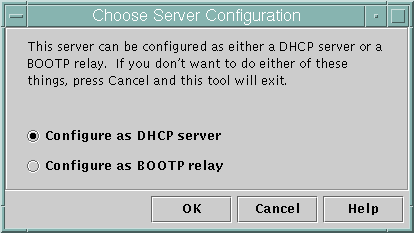
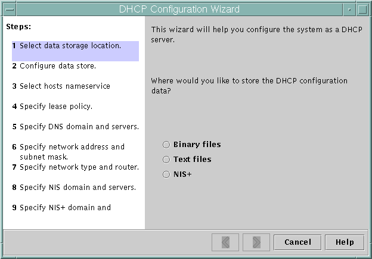
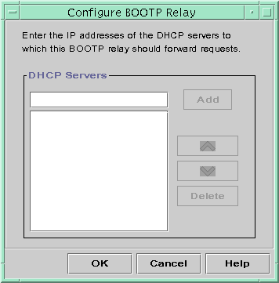

Previous
Previous
Configuring the DHCP Service (Tasks)
When you configure the DHCP service on your network, you configure and start the first DHCP server. Other DHCP servers can be added later and can access the same data from a shared location if the data store supports shared data. This chapter describes tasks that enable you to configure the DHCP server and place networks and their associated IP addresses under DHCP management. This chapter also explains how to unconfigure a DHCP server.
Each task includes a procedure to help you perform the task in DHCP Manager and a procedure for the equivalent task with the dhcpconfig utility. This chapter contains the following information:
Configuring and Unconfiguring a DHCP Server Using DHCP Manager
Configuring and Unconfiguring a DHCP Server Using dhcpconfig Commands
If you experience problems configuring the DHCP service, see Chapter 17, Troubleshooting DHCP (Reference).
After you configure the DHCP service, see Chapter 15, Administering DHCP (Tasks) for information about managing the DHCP service.
Configuring and Unconfiguring a DHCP Server Using DHCP Manager
This section includes procedures to help you configure and unconfigure a DHCP server with DHCP Manager. Note that you must be running an X Window system such as CDE or GNOME to use DHCP Manager.
DHCP Manager can be run as superuser with the /usr/sadm/admin/bin/dhcpmgr command. See About DHCP Manager for general information about the utility. See How to Start and Stop the DHCP Service (DHCP Manager) for more detailed information about running DHCP Manager.
When you run DHCP Manager on a server that is not configured for DHCP, the following screen is displayed. You can specify whether you want to configure a DHCP server or a BOOTP relay agent.
Figure 14-1 Choose Server Configuration Dialog Box in DHCP Manager
Configuring DHCP Servers
When you configure a DHCP server, DHCP Manager starts the DHCP Configuration Wizard, which prompts you for information that is needed to configure the server. The initial screen of the wizard is shown in the following figure.
Figure 14-2 DHCP Configuration Wizard's Initial Screen
When you finish answering the wizard prompts, DHCP Manager creates the items that are listed in the following table.
Table 14-1 Items Created During DHCP Server Configuration
 How to Configure a DHCP Server (DHCP Manager)
How to Configure a DHCP Server (DHCP Manager)
Before You Begin
Make sure that you have read Chapter 13, Planning for DHCP Service (Tasks) before you configure your DHCP server. In particular, you should use the guidelines in Making Decisions for Your DHCP Server Configuration (Task Map) to help you perform the following tasks:
Select the system that you want to use as a DHCP server.
Make decisions about your data store, lease policy, and router information.
Become superuser on the server system.
Start DHCP Manager.
#/usr/sadm/admin/bin/dhcpmgr &
Choose the option Configure as DHCP Server.
The DHCP Configuration Wizard starts, to help you configure your server.
Select options, or type requested information, based on the decisions you made in the planning phase.
If you have difficulty, click Help in the wizard window to open your web browser and display help for the DHCP Configuration Wizard.
Click Finish to complete the server configuration when you have finished specifying the requested information.
At the Start Address Wizard prompt, click Yes to configure IP addresses for the server.
The Add Addresses to Network wizard enables you to specify which addresses to place under the control of DHCP.
Answer the prompts according to decisions you made in the planning phase.
See Making Decisions for IP Address Management (Task Map) for more information. If you have difficulty, click Help in the wizard window to open your web browser and display help for the Add Addresses to Network wizard.
Review your selections, and then click Finish to add the IP addresses to the network table.
The network table is updated with records for each address in the range you specified.
See Also
You can add more networks to the DHCP server with the Network Wizard, as explained in Adding DHCP Networks.
Configuring BOOTP Relay Agents
When you configure a BOOTP relay agent, DHCP Manager takes the following actions:
Prompts you for the IP address for one or more DHCP servers to which requests should be relayed
Stores settings needed for BOOTP relay service
The following figure shows the screen displayed when you choose to configure a BOOTP relay agent.
Figure 14-3 Configure BOOTP Relay Dialog Box in DHCP Manager
How to Configure a BOOTP Relay Agent (DHCP Manager)
Before You Begin
Make sure that you have read Chapter 13, Planning for DHCP Service (Tasks) before you configure your BOOTP relay agent. In particular, you should see Selecting a Host to Run the DHCP Service for help in selecting the system to use.
Become superuser on the server system.
Start the DHCP Manager.
#/usr/sadm/admin/bin/dhcpmgr &
If the system has not been configured as a DHCP server or BOOTP relay agent, the DHCP Configuration Wizard starts. If the system has already been configured as a DHCP server, you must first unconfigure the server. See Unconfiguring DHCP Servers and BOOTP Relay Agents.
Select Configure as BOOTP Relay.
The Configure BOOTP Relay dialog box opens.
Type the IP address or host name of one or more DHCP servers, and click Add.
The specified DHCP servers must be configured to handle BOOTP or DHCP requests received by this BOOTP relay agent.
Click OK to exit the dialog box.
Notice that DHCP Manager offers only the File menu to exit the application and the Service menu to manage the server. The disabled menu options are useful only on a DHCP server.